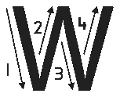

Letter W
Trace the uppercase letter W or write dot six, then dots two, four, five, and six.

Copy or finger spell the letter W using the writing lines, keyboard, or braille.
Copy or finger spell uppercase W with lowercase w using the writing lines, keyboard, or braille.
Copy or sign the following words in your exercise book.
Copy or sign the word Water using the writing lines, keyboard, or braille.
Water
Copy or sign the word Win using the writing lines, keyboard, or braille.
Win
Copy or sign the word White using the writing lines, keyboard, or braille.
White
Copy or sign the word Well using the writing lines, keyboard, or braille.
Well
Copy or sign the word Wall using the writing lines, keyboard, or braille.
Wall